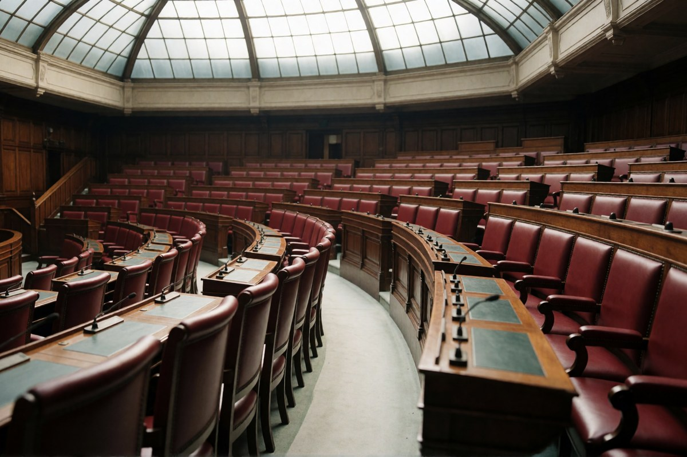

Politica italiana · 15 novembre 2026
Arianna Meloni e la Terza Repubblica: basta una legge elettorale?

Sul Riformista la dirigente di Fratelli d'Italia annuncia la fine dell'era dei governi nati dagli accordi. L'editoriale per gli abbonati, con il commento dell'autore e i due nodi ancora aperti.
di Franco Zanghì
Siamo entrati nella Terza Repubblica, e Giorgia Meloni ne è il primo presidente del Consiglio. Lo sostiene Arianna Meloni, dirigente di Fratelli d'Italia e sorella della presidente del Consiglio, in un intervento pubblicato dal Riformista il 13 novembre. Il punto di partenza è la nuova legge elettorale, quella che i giornali chiamano Stabilicum: la Camera l'ha approvata in via definitiva l'8 ottobre e il giorno dopo Sergio Mattarella l'ha promulgata.
La tesi
Con la riforma, scrive Arianna Meloni, si chiude «l'era dei governicchi nati dagli inciuci». Gli elettori sapranno prima del voto come sono fatte le coalizioni, quali sono i programmi e chi è il candidato alla presidenza del Consiglio; tornano le preferenze; chi vince avrà i numeri per governare cinque anni. Il discorso si allarga poi ai risultati che il partito rivendica, dal lavoro ai contratti della sanità e della scuola fino al piano casa. Il filo che li tiene insieme, secondo lei, è uno solo: la stabilità.
Dove ha ragione
Sulla stabilità ha ragione, e va detto senza giri di parole. Dal dopoguerra a oggi l'Italia ha cambiato quasi settanta governi, e un Paese che in media cambia governo ogni anno non riesce a programmare niente: né le grandi opere, né la scuola, né le tasse. Sapere prima del voto chi sarà il candidato premier è buon senso, non un attentato alla democrazia. Ma la frase più convincente dell'intervento è anche la più prudente: «nessuna legge elettorale può garantire da sola la qualità della politica». La Terza Repubblica non si proclama, si vede: si vedrà dalle persone che i partiti metteranno in lista, preferenze o no.
I due nodi aperti
Il primo è giudiziario. Contro lo Stabilicum sono stati presentati ricorsi da gruppi di cittadini e sono state fissate udienze in diverse corti d'appello: sono quei giudici che possono sollevare la questione davanti alla Corte costituzionale. I punti più discussi, ricorda Avvenire, sono le firme, molto aumentate, chieste ai partiti che non sono già in Parlamento e l'alternanza fra uomini e donne nei capilista.
Il secondo è politico. Sullo stesso Riformista, il 12 ottobre, un altro articolo sosteneva che chi vince col 42 per cento avrà un potere sproporzionato. Il giudizio è discutibile, la preoccupazione merita una risposta: una maggioranza più forte deve trattare l'opposizione con più rispetto, non con meno. È così che la stabilità diventa di tutti e non soltanto di chi vince. Il primo esame, comunque, lo faranno gli elettori e non i giornali.
Fonti
- Arianna Meloni, intervento sulla nuova legge elettorale, Il Riformista, 13 novembre 2026
- Il Riformista, l'articolo critico sul premio di governabilità, 12 ottobre 2026
- Avvenire, «Udienze e ricorsi, procede su un doppio binario la caccia allo Stabilicum», novembre 2026
- Quotidiano Nazionale, «Legge elettorale: al via le udienze contro lo Stabilicum», novembre 2026
- Il Post, «C'è il rischio che la nuova legge elettorale sia incostituzionale?», 25 settembre 2026
Articolo tratto dall'editoriale per gli abbonati del canale Franco Zanghì del 15 novembre 2026, costruito sull'intervento di Arianna Meloni pubblicato dal Riformista il 13 novembre 2026. Il giudizio della Corte costituzionale sulla legge era ancora da venire alla data di pubblicazione.